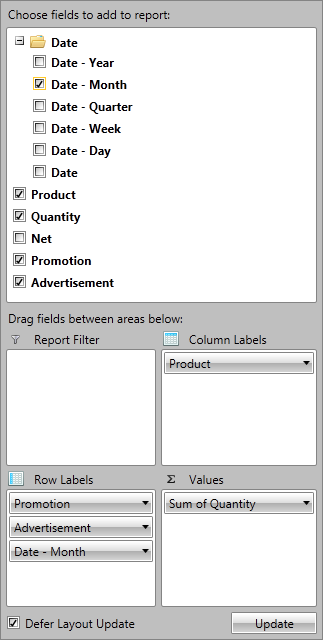

RadPivotFieldList

RadPivotFieldList is an integral part of RadPivotGrid. It gives the users the power to modify RadPivotGrid
and generate many different reports with the current data.
Key Features:
Automatically change RadPivotGrid generated report when the "Defer Layout Update" is unchecked.
Using CheckBoxes to mark the data you want to include in the RadPivotGrid.
Using RadContextMenu to apply modifications on RadPivotGrid runtime:
Sorting ascending and descending
Apply Number Format from the predefined formats or create your own
Change currently used Aggregate function
Applying different filters - Label, Value, Top10 filter
Using different Calculations for GrandTotals
Using percent of GrandTotal instead showing the whole number.